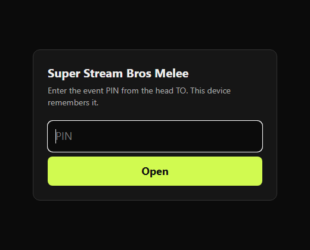

LAN events with several TOs (regionals) ★ beta
PROTOCOL* runs its weekly from one PC. Bigger events have a TO desk, several bracket runners with tablets, bracket screens for players, one or more streams and a few hundred entrants. This guide covers running the docks from one hub PC on an event network for all of that. Ticks are saved in this browser ().
★ beta = used at our events but not thoroughly tested yet. Found a bug or something unclear? Open an issue on GitHub (FRjhracing).
What to expect
- Off by default. Out of the box the docks only answer the PC they run on (as in guide 5). LAN access is opt-in, per dock, behind a PIN.
- Tested: the PIN gate, full and view-only access, PINs never reaching the pages, the per-instance port and token, the bigger-bracket settings (on one PC, with a simulated second device and a made-up bracket). Not tested yet: a real multi-PC event network, a regional-size bracket against start.gg's live limits, more than one stream feeding the VOD tools. Rehearse before the event (checklist).
- The start.gg website keeps working next to the docks: anything reported there shows up in the docks within one refresh.
The picture
Everything that talks to start.gg runs on the hub: tokens never leave it, all set times come from one clock, and the other devices are just browsers. If the hub goes down the devices show "server not reachable" and OBS keeps the last overlay; start.gg itself is unaffected.
Pick a layout
A Local with helpers
1 stream, 2-4 TOs, up to ~64 entrants. The stream PC is the hub: one Melee dock with "lan": true.
Helpers open /bracket on their phones/tablets; OBS reads the local output\ as usual.
Smallest change from the weekly setup. Default bracket settings are fine.
B Regional, one stream
1 stream, a TO desk, 100-300 entrants. Hub PC at the TO desk runs the Melee dock; the stream PC's OBS reads the
hub's output\ over a read-only share; the stream operator uses Home from the stream PC.
Raise bracketCacheSeconds (see Big brackets). The hub can be a plain laptop: the dock is light.
C Regional, two+ streams
Each stream needs its own Melee dock instance (one dock = one overlay). Instance 1 (:8765) = bracket desk + stream 1 + every off-stream setup; instance 2 (:8767) = stream 2 only. Each has its own folder, port, token and start.gg stream.
Both show the full bracket and both can act on it. Give stream 2's operator only :8767; the desk uses :8765.
+ Ultimate at the same event ★ beta
The Ultimate dock (:8766) runs on the hub too, with its own token and PIN. Its two "Recording" slots time-stamp the Ultimate
recordings; slotLabel: "Stream" if they are streams.
Same LAN settings as the Melee dock.
1. Network
| Port | What |
|---|---|
8765 | Melee dock (instance 1) |
8766 | Ultimate dock |
8767, 8768… | more Melee dock instances (stream 2, 3…) |
445 | Windows file sharing (stream PCs reading the overlay files) |
Never forward these ports to the internet: it's plain HTTP made for a private event network.
2. Hub PC
Hub One-time setup
PINs: 6+ characters, the view PIN different from the staff PIN. They are never sent to any page. Changing a PIN (edit + restart) signs every device out.
3. Stream PCs and the overlay
OBS reads files, and the dock writes them on the hub. Two ways to bring them together:
Recommended Shared folder from the hub
If the network blips, OBS keeps showing the last overlay. The overlay picture and the theme come from the hub (the dock copies them into output\); only the positions come from the stream PC's own layout.json.
Alternative Dock instance on the stream PC
Run that stream's Melee dock on the stream PC itself, as in the weekly setup, with "lan": true so the desk can still reach it. OBS reads local files; no share needed.
Use it when the stream PCs are far from the desk or the network is shaky. Its token, logs and clock are then on the stream PC: sync its clock (below) and collect its timestamps\ folder afterwards too.
4. TO devices and bracket screens
| Who | Page | Does |
|---|---|---|
| Head TO | Home on the hub | ⚙ settings, tournament, setups, theme; fixes (Reset) |
| Bracket runners | /active, /bracket | Call, Put on setup… when players sit down, Report (score or DQ) |
| Stream operator | Home (their instance) | On stream panel, characters, Put on stream, Report |
| Screens | /active (view PIN) | look only |
One person drives each stream's On stream panel: two people editing it at once overwrite each other. Everything else is safe to share; the pages refresh each other within a second.


5. Big brackets: start.gg's limit
Every refresh of the bracket reads the whole event from start.gg, 25 sets per request. One fetch is shared by all pages and
devices for bracketCacheSeconds, so with many devices open the cost per minute is about:
requests per minute ≈ pages × 60 ÷ bracketCacheSeconds pages = sets ÷ 25 (rounded up)
The dock keeps its reads under 55 a minute per token (reports, calls and starts are never held back). Aim for about 45 or less. Double elimination has about 2 sets per entrant (pools count too: it's every set of the event).
| Entrants (double elim) | Sets | Pages | bracketCacheSeconds | maxBracketPages | pollSeconds |
|---|---|---|---|---|---|
| up to 32 | ~62 | 3 | 5 (default) | 16 (default) | 20 (default) |
| 64 | ~126 | 6 | 10 | 16 | 20 |
| 128 | ~254 | 11 | 15 | 16 | 20 |
| 256 | ~510 | 21 | 30 | 24 | 30 |
| 512 | ~1020 | 41 | 60 | 44 | 45 |
- Your own actions still show at once: after a report or a call the dock refreshes right away and a few seconds later.
- Too low a cache: pages show a yellow "rate limit" note and lag a little, then catch up by themselves. Nothing is lost.
- Bracket bigger than
maxBracketPages: the dock window warns ("only N pages are read"); raise it. - Very big events: the bracket pages get long. Bracket runners mostly need
/active. A separate event per game is a separate dock (or the Ultimate dock).
6. Before and on the day
Week before Rehearse
Event day Doors open
7. Afterwards
The VOD tools were built for one stream per event. Stream 1 works as in the weekly. For stream 2, expect a separate
vod_config.json with its own recording and its instance's log, and some hand-fixing: this hasn't been done yet. Off-stream sets on setups that
only instance 1 logged come out as in the weekly.
Security in one paragraph
The start.gg tokens stay on the hub; devices only get pages and bracket data. The staff PIN lets a device do anything the dock can (report, DQ, reset, change the overlay) as the token's start.gg account, so give it to staff only and change it between events. The view PIN can't change anything. PINs are checked on the hub, never sent to pages, and the device keeps a cookie that doesn't contain them. Five wrong tries a minute per device, then it waits. The network traffic itself is not encrypted: keep it on your own staff network, never on open Wi-Fi or the internet.
Troubleshooting
| Symptom | Fix |
|---|---|
| Phone/tablet can't open the hub at all | Same network? Hub profile Private? Firewall allows Python on Private? Wired the hub but the tablet is on venue Wi-Fi? Try the other address the dock window printed. |
Dock window says LAN access: off | "lan": true missing, or lanPin shorter than 6 characters (the window says which). Restart after editing. |
| PIN page keeps coming back | The browser blocks cookies (private mode) or the hub's address changed; use the fixed address. Each port asks once. |
| "View-only access" when reporting | That device signed in with the view PIN. Clear the site's cookies on it and sign in with the staff PIN. |
| Yellow "rate limit" note all the time | Raise bracketCacheSeconds (table above); give each instance its own token; close stray pages. |
| Late rounds missing from the bracket pages | The dock window warns about pages: raise maxBracketPages. |
| OBS on the stream PC shows nothing | Open \\<hub>\ssb-melee in Explorer on the stream PC; fix the share or its permissions; re-run the generator with the right --output. |
| Second instance says "Port … is busy" | Give it its own "port" in its dock_config.json. |
| "start.gg token (STARTGG_TOKEN_STREAM2): NOT SET" | set_token.bat STARTGG_TOKEN_STREAM2, then restart that dock. |
* PROTOCOL is the weekly series these tools were built for; see README.